RETO 1
"CREAR NUESTRO IES FICTICIO"
Investigar, sentir, imaginar, planificar y evaluar
Desde el 10/11/22 hasta el 17/11/22, el IES Ligustinus alcanzó los siguientes objetivos:
- Elegir un IES real como modelo para el nuestro ficticio.
- Crear nuestro propio IES.
- Seleccionar las funciones de cada integrante del grupo.
- Estructurar como será nuestro centro ficticio.
- Elaborar: una página web, una presentación y un logo para nuestro IES Ligustinus.
RETO 2
"AULA"
Situaciones de aprendizaje
Desde el 15/11/22 hasta el 22/11/22, el IES Ligustinus alcanzó los siguientes objetivos:
- Confeccionar planes y proyectos para nuestro IES ficticio.
- Aportar un compendio, de características fundamentales de nuestro proyecto innovador.
- Elaborar el proyecto de emprendimiento llamado "Huerto Digital".
- Proponer el logo ganador para la propuesta de "APAsiona2".

RETO 3
"EVALUACIÓN
Taxonomía de Bloom
Desde el 24/11/22 hasta el 29/11/22, el IES Ligustinus alcanzó los siguientes objetivos:
- Crear una situación de aprendizaje propia.
- Investigar sobre estas situaciones y la taxonomía de Bloom.
- Elaborar respuestas y definiciones propias sobre el DUA y la evaluación.
- Realizar actividades analógicas como "el cubo de pensar".
.PNG) 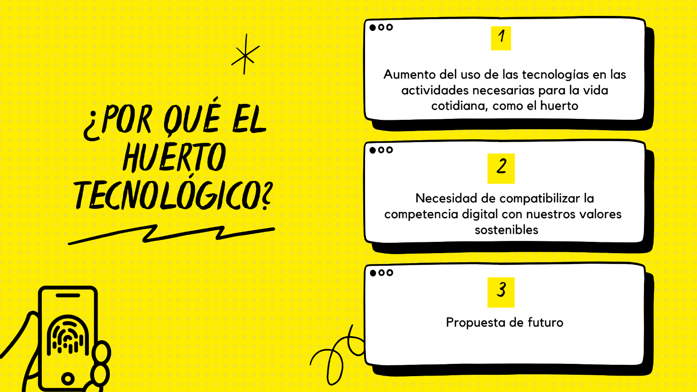
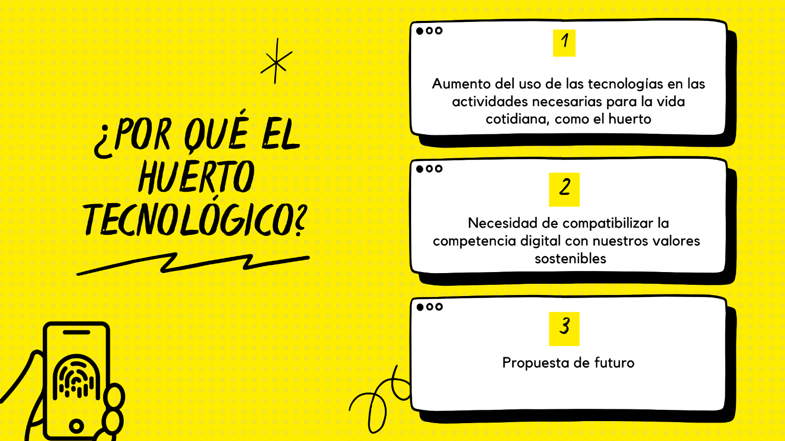
 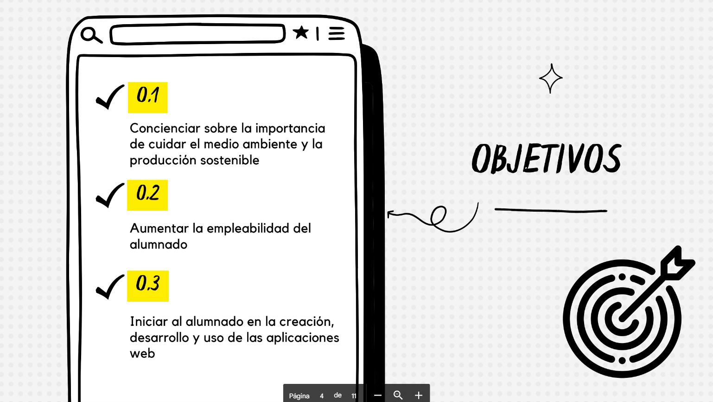
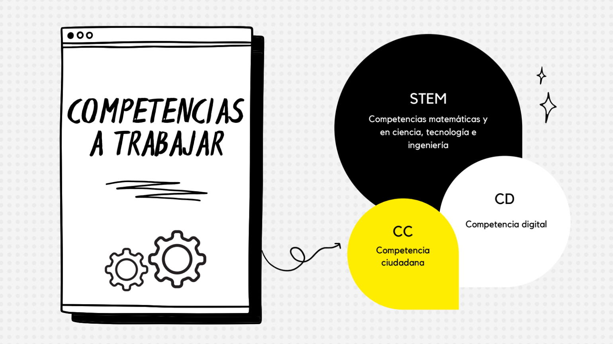
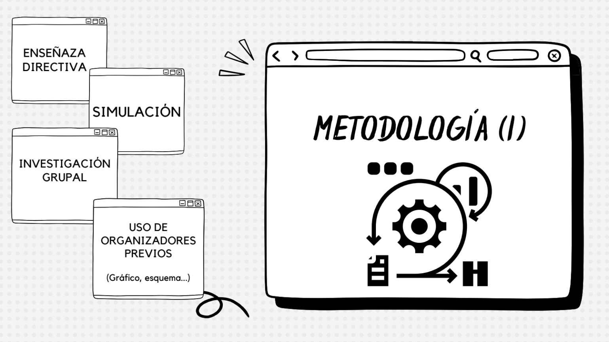
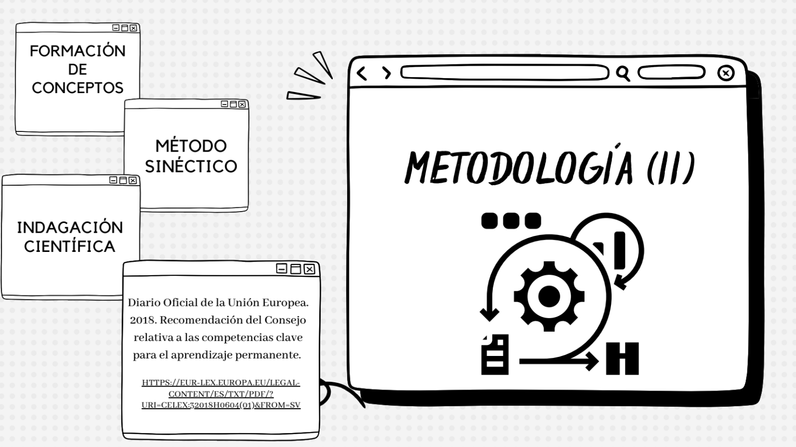
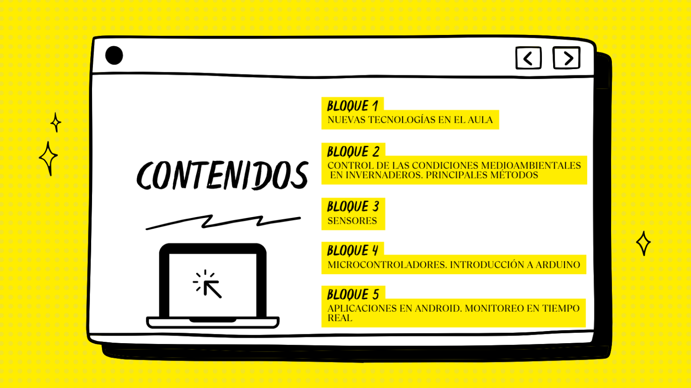
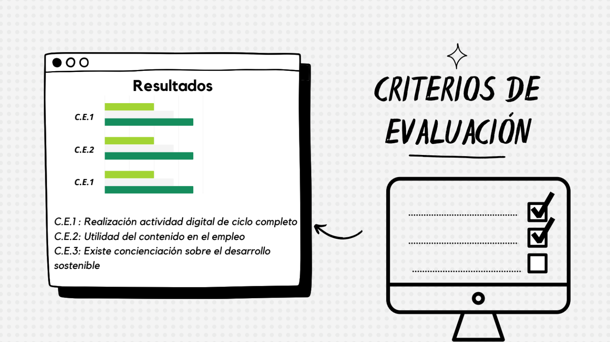
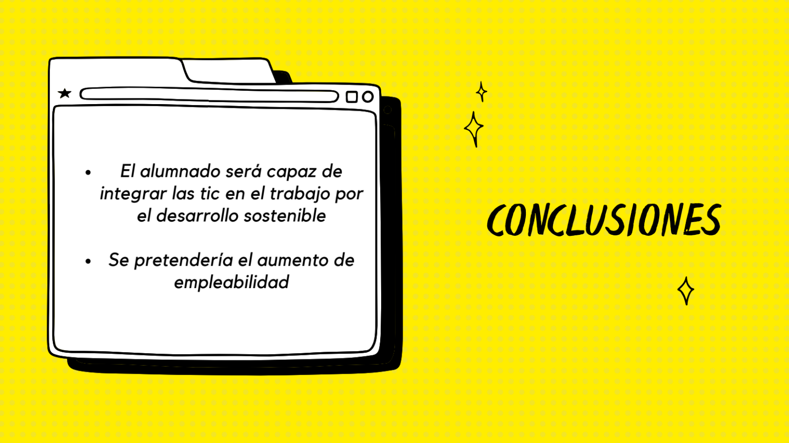
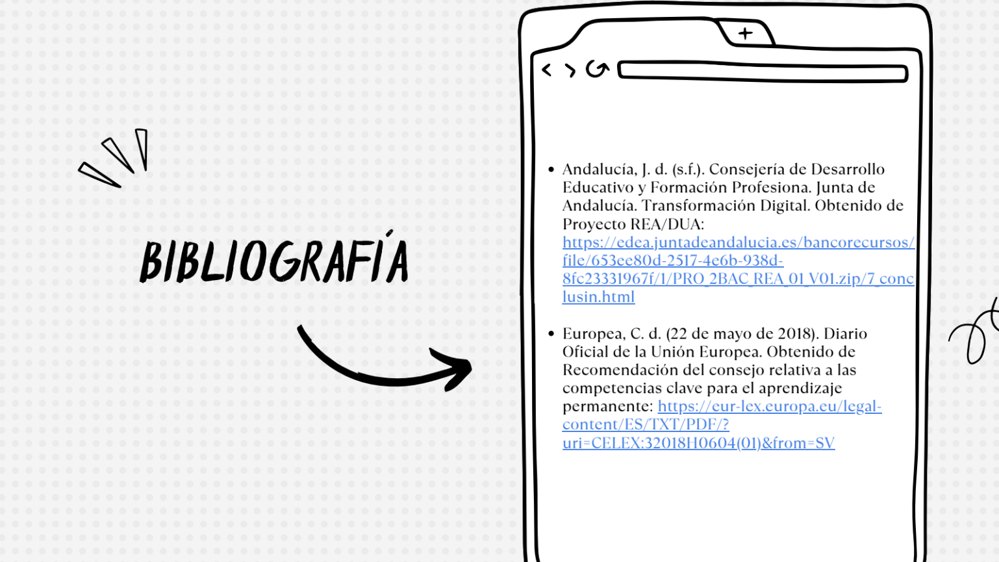
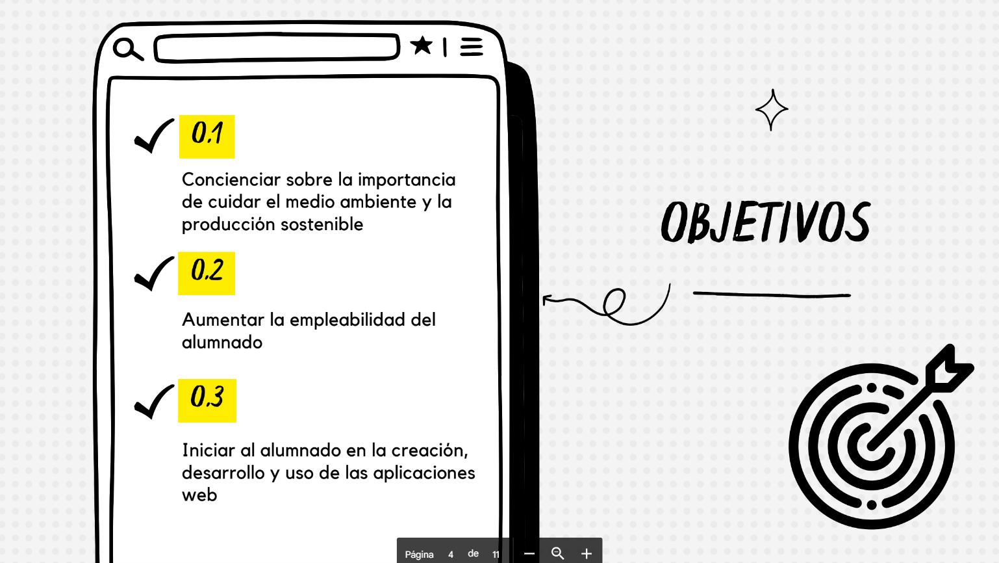
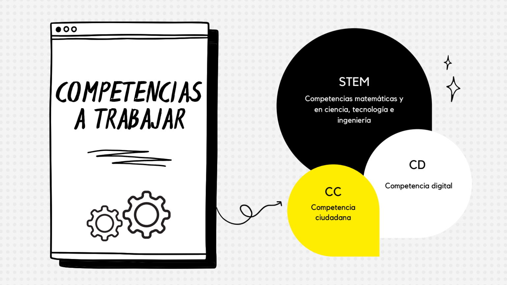
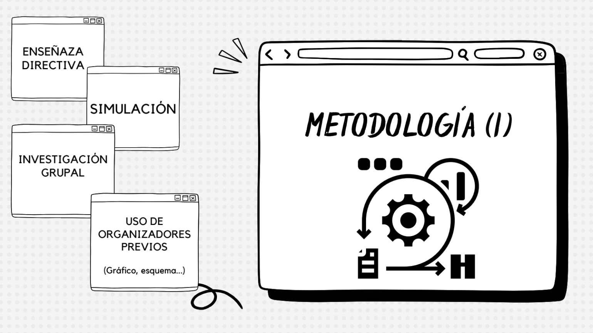
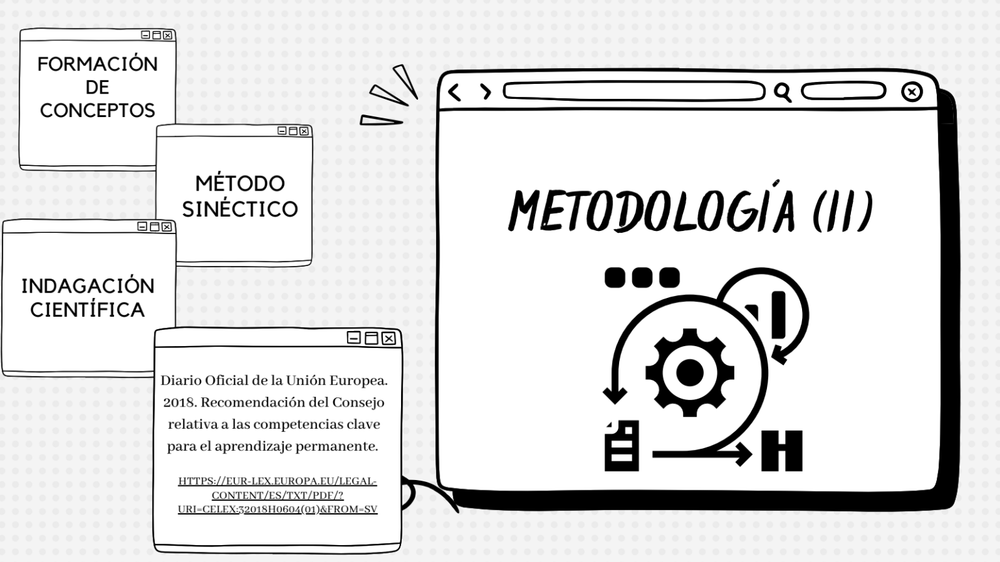
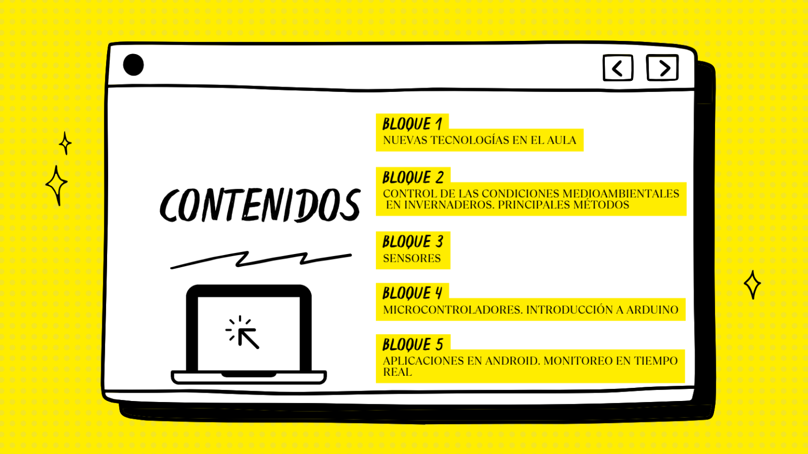
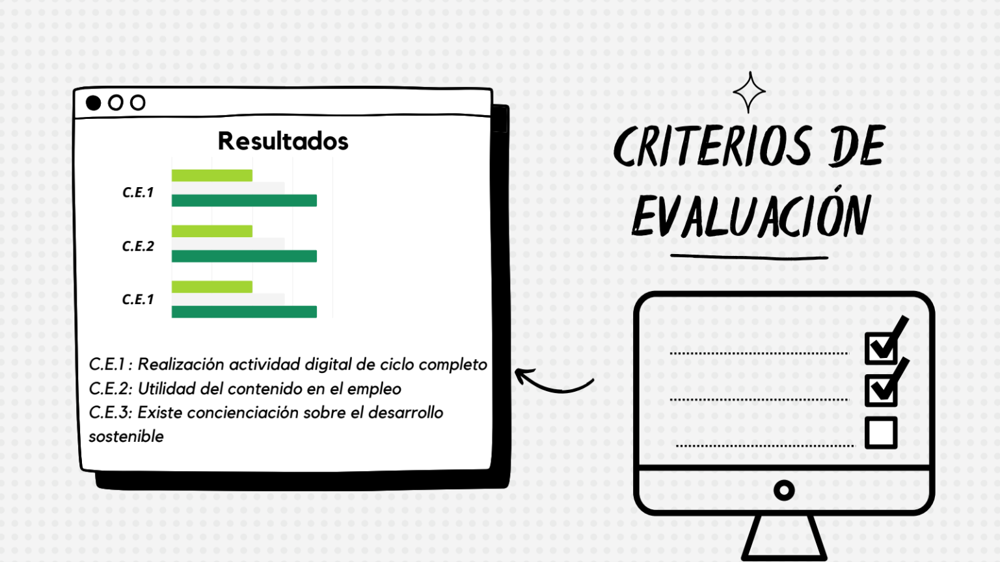
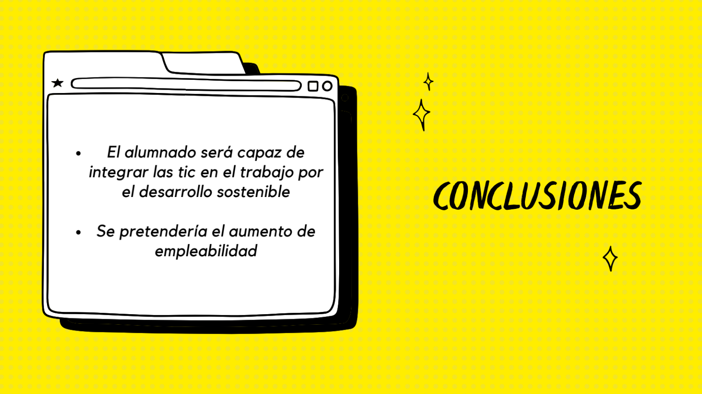
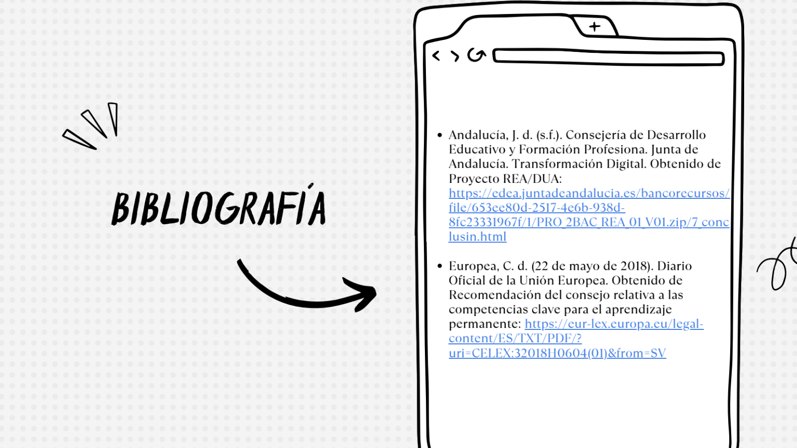
RETO 4
"PROFESORADO COMPROMETIDO"
Modelo TPACK
El desde el 1/12/22 en adelante, el IES Ligustinus realizará las siguientes actividades:
- Un par de ejercicios de forma individual y voluntaria, sobre diferentes actividades basadas en la mejora y compromiso del docente.
- Realización del resumen de los contenidos aprendidos y usados durante todo el proceso del IES ficticio.